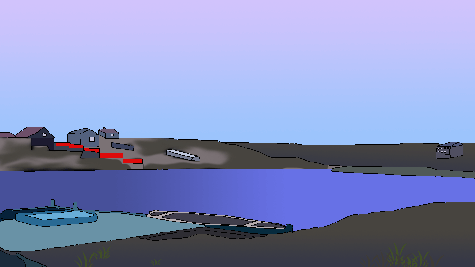

Цукерня
Озеро Цукерня знаходиться в селі Якушенці, що в одному кілометрі від міста Вінниця.
Головним профілем цього риболовного місця є трофейний вилов коропів. В озері мешкають понад сотні коропів вагою від 10-ти кілограмів! Число трофейних коропів в Озері Цукерня постійно зростає завдяки зариблення великими особинами з інших водойм. Карпи-новачки швидко адаптуються і незабаром - активно клюють.
Береги озера - сухі трав'янисті, зручні для встановлення намету. Поблизу посадочних місць відсутні дерева або кущі, що заважають забросам. Окремі посадочні місця обладнані дерев'яними вимостками - 3 х 4 м.
Справжні любителі сучасної коропової лову їдуть на Озеро Цукерня нема за риб'ячим м'ясом, а за незабутніми емоціями і відчуттями, за драйвом та адреналіном, за тяжким очікуванням клювання і ейфорією від її успішної реалізації.
Незважаючи на правило "зловив-відпусти" - доступні ціни, комфортні умови лову, привітність адміністрації і трофейні екземпляри коропів з року в рік ваблять на Цукерню справжніх карпятников і новачків карпфішінга з усієї України.
Ціна
Білет на 1 риболовний день (4:00-20:00) коштує 200 грн.
Способи ловлі
З берега чи на човні.
Риба
В водоймі водиться така риба: Карась, Сом, Окунь, Короп, Щука, Судак, Парчевий короп, Товстолоб.
Дозволені снасті
Всі окрім браконьєрських. На водоймі діє правило 4 снасті на 1 білет.
Глибина
Максимальна глибина - 3м.
Обмеження на вилов риби
Вся виловлена риба відпускається назад в воду. За бажанням, рибалка може викупити виловлену рибу (коропів) по ціні 60грн/кг.